2025년 경제·경영 환경 전망
회원사에게 듣는
2025 경제·경영 전망
한국경제인협회가 회원사를 대상으로 2025년도 경제·경영에 대한 의견 조사를 실시했다.
조사 대상 한국경제인협회 회원사(응답 156명)
조사 기간 2024년 11월 13일~12월 6일
조사 기관 리서치앤리서치
조사 방법 구조화된 설문지를 통한 온라인 조사
표본오차 95% 신뢰 수준에서 최대 허용 표본오차 ± 7.14%p
Q1. 2025년 우리 경제에 가장 큰 영향을 미칠 것으로 예상되는 요인 1~3순위(응답 수: 156개)
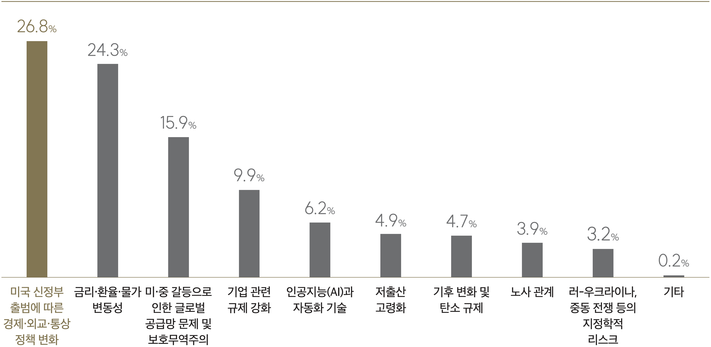Q2. 2025년 경영계획 기조(응답 수: 156개)
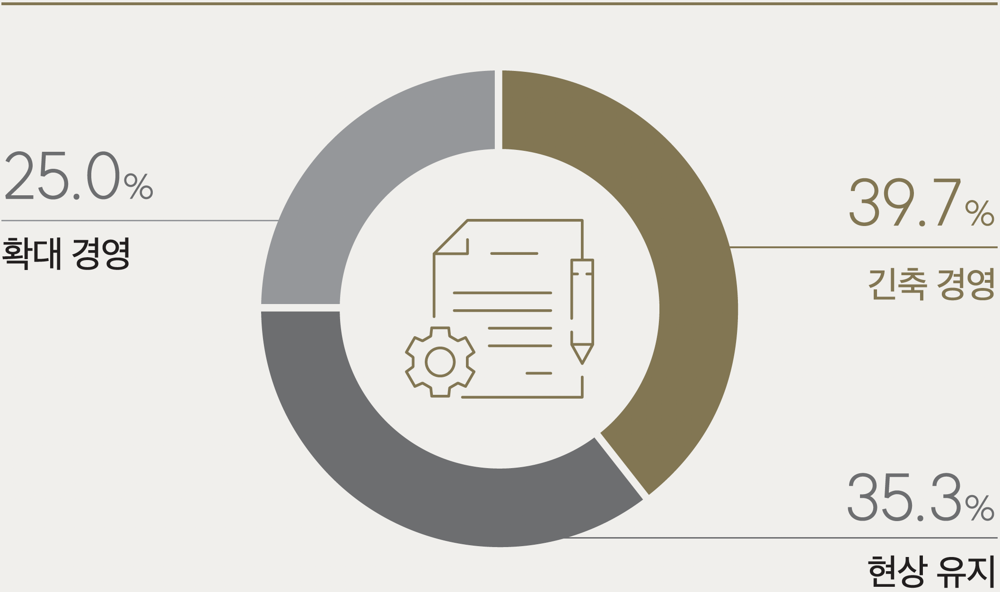Q3. 2025년 경영전략 핵심 키워드 1·2순위(응답 수: 156개)
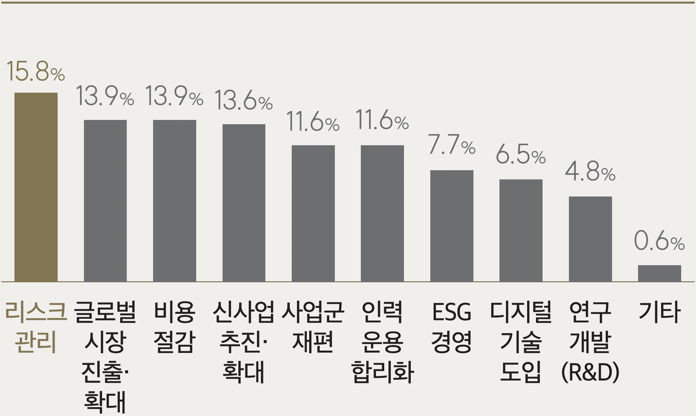Q4. 2025년 실적에 큰 영향을 미칠 것으로 예상되는 외부 환경요인 1·2순위(응답 수: 156개)
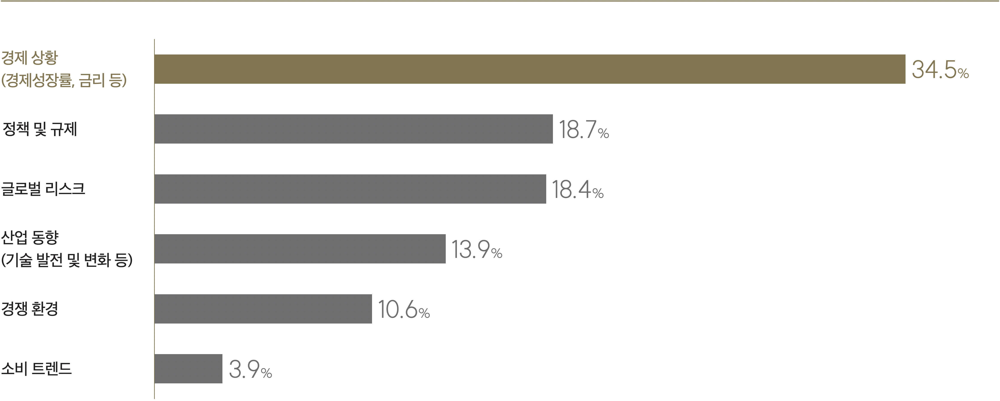Q5. 2024년 대비 2025년 투자 계획(응답 수: 156개)
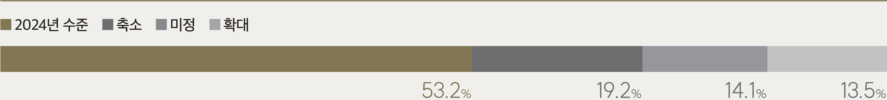Q5-1. 투자 확대 계획 주된 이유(응답 수: 21개)
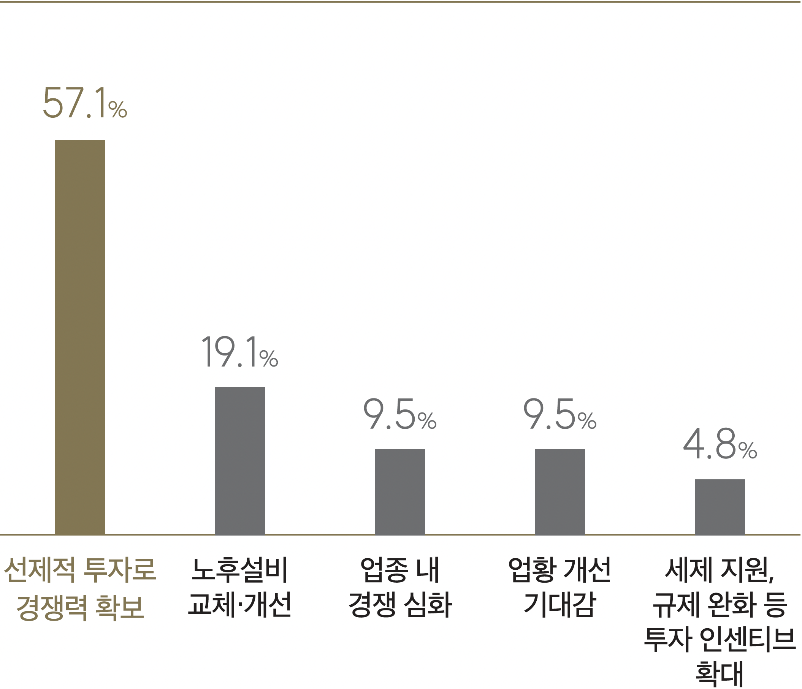Q5-2. 투자 축소 계획 주된 이유(응답 수: 30개)
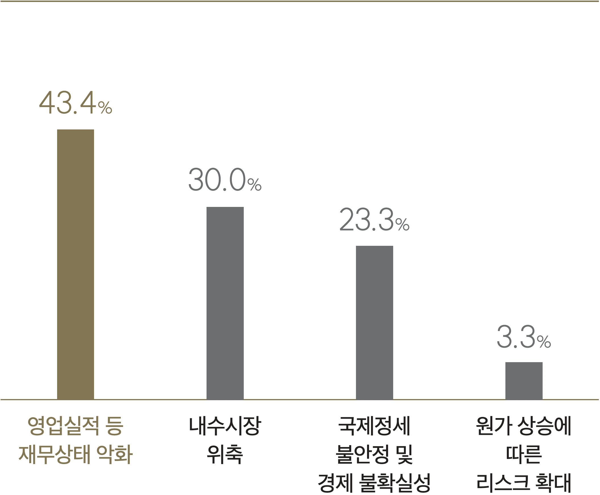Q6. 주요 투자 분야 1·2순위(응답 수: 156개)
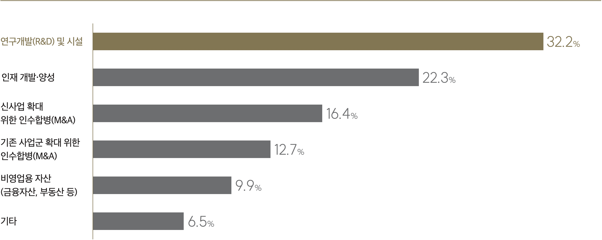Q7. 2024년 대비 2025년 채용 계획(응답 수: 156개)
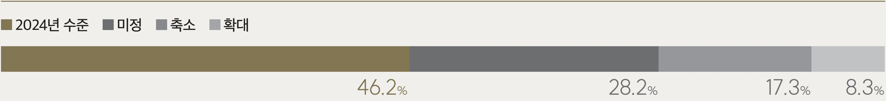Q7-1. 채용 확대 계획 주된 이유(응답 수: 13개)

Q7-2. 채용 축소 계획 주된 이유(응답 수: 27개)
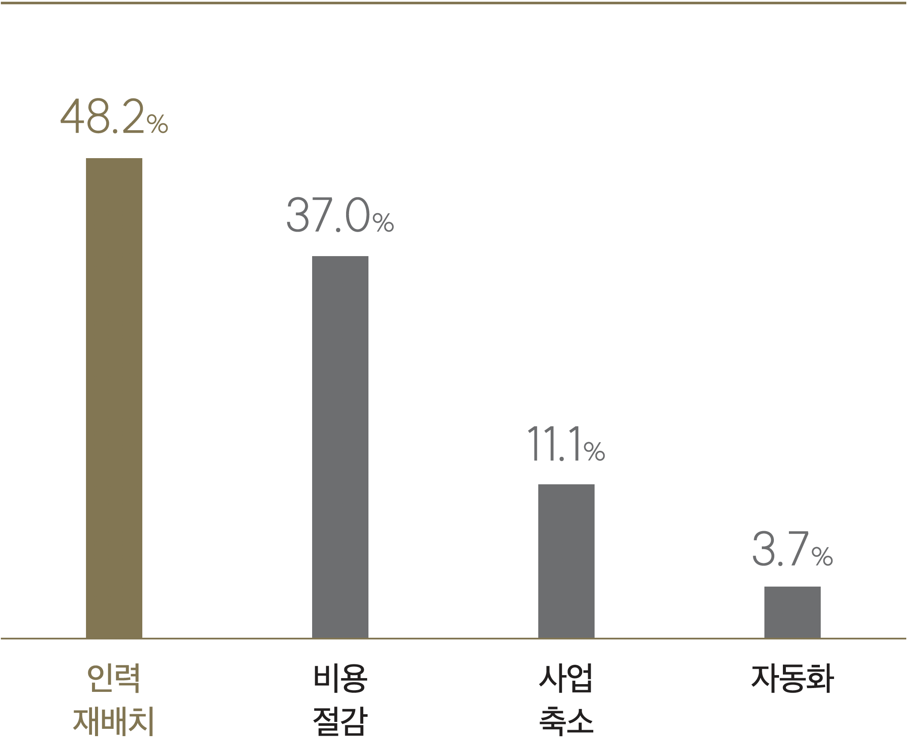Q8. 2025년 기업 규제 환경 전망(응답 수: 156개)
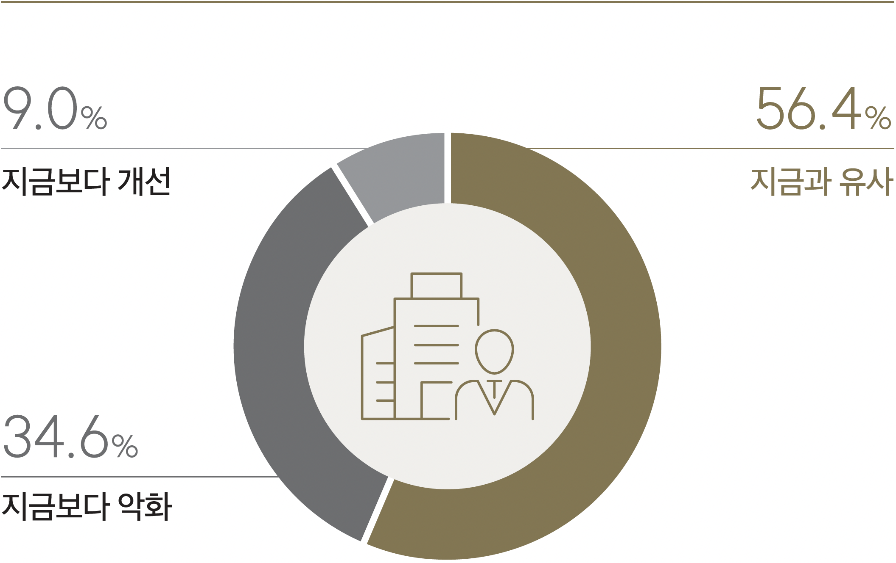Q9. 경제안보 관련 가장 우려되는 부분(위협 요소)(응답 수: 156개)
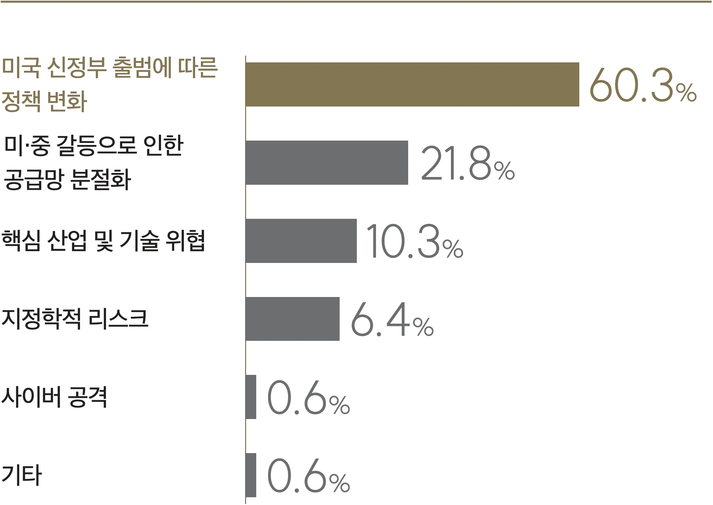Q10. 美 대선 결과가 2025년 경영전략 수립에 영향 여부(응답 수: 156개)
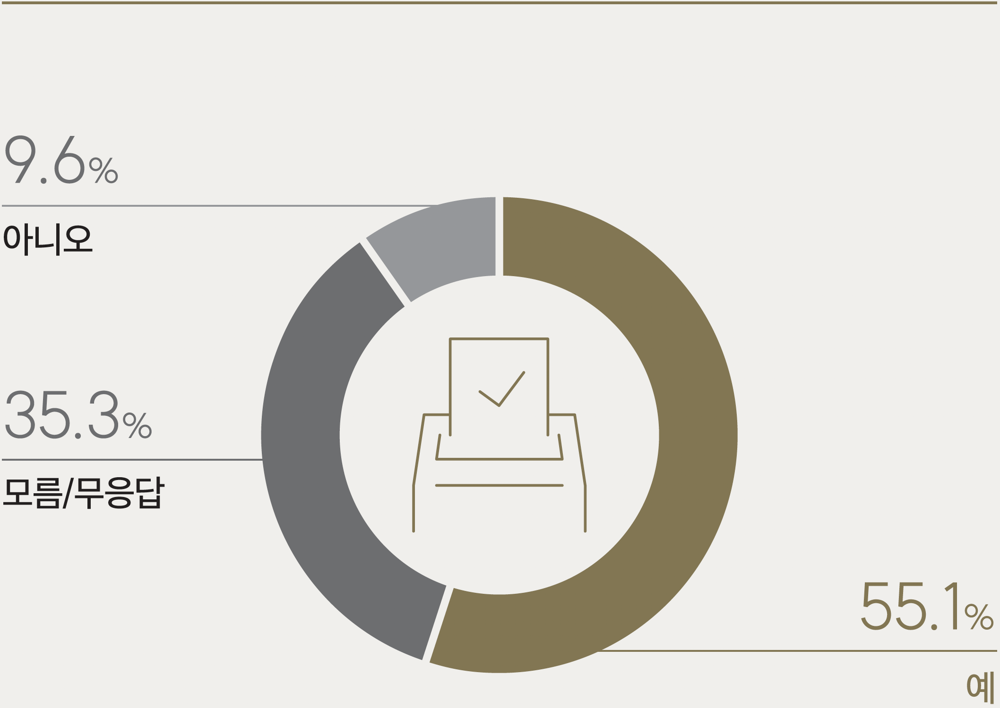Q10-1. 영향받을 것으로 예상하는 분야 1·2순위(응답 수: 86개)
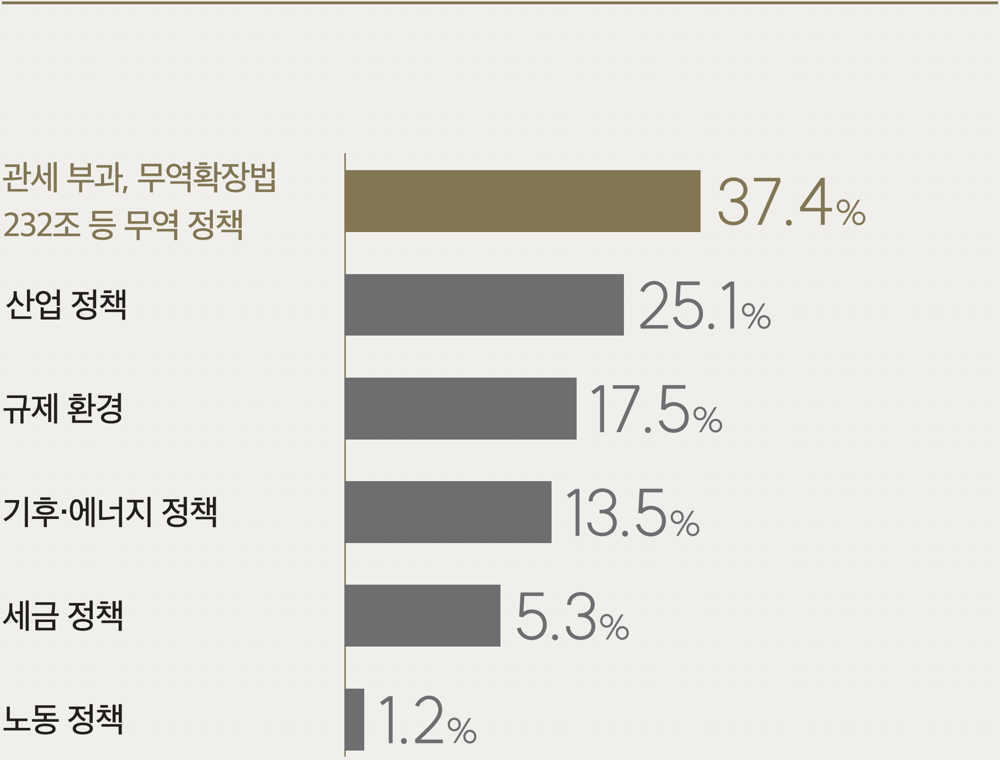Q11. 글로벌 경쟁력 확보를 위한 정부 우선 정책과제 1·2순위(응답 수: 156개)
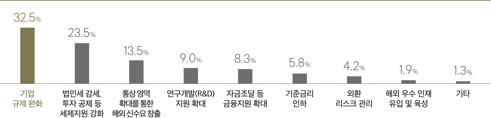